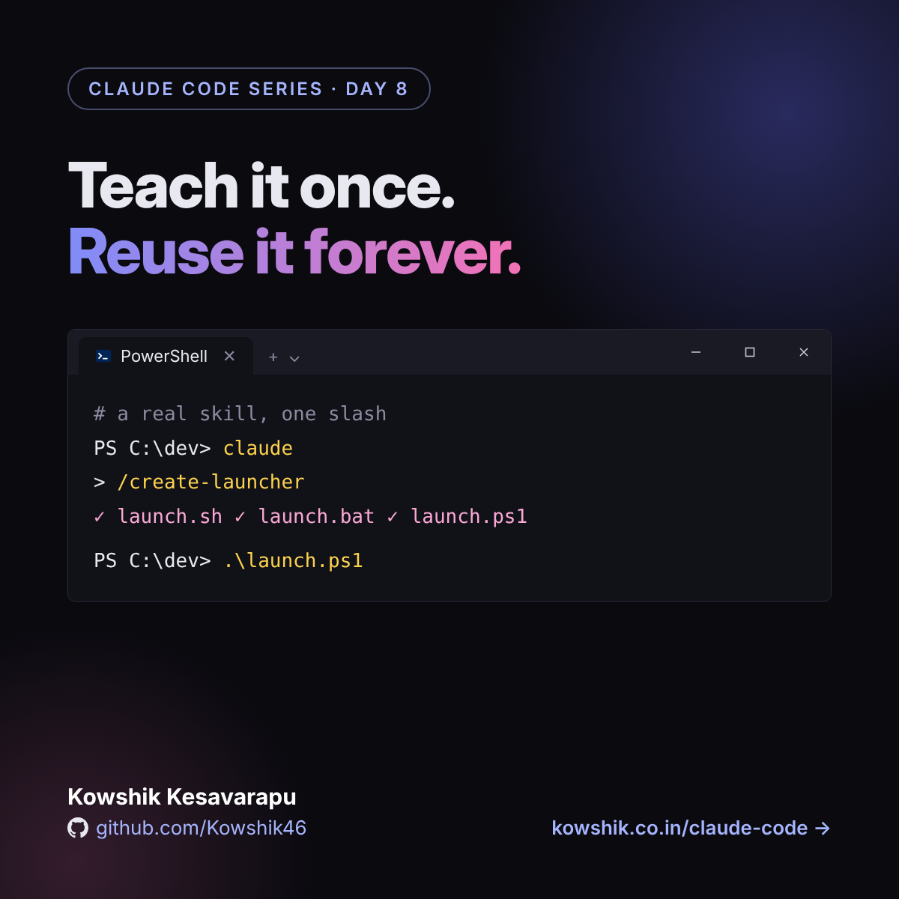
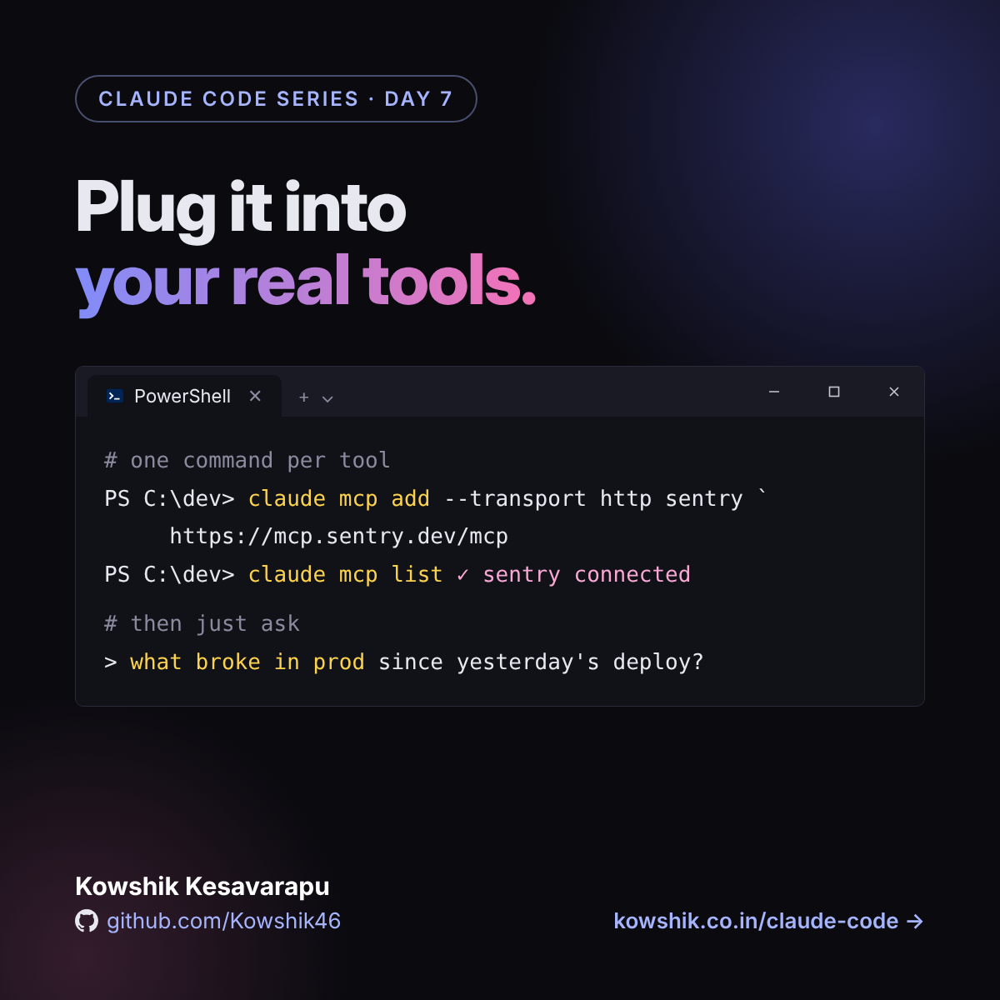
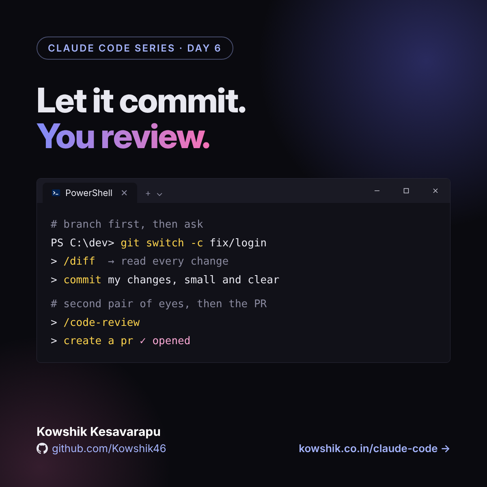
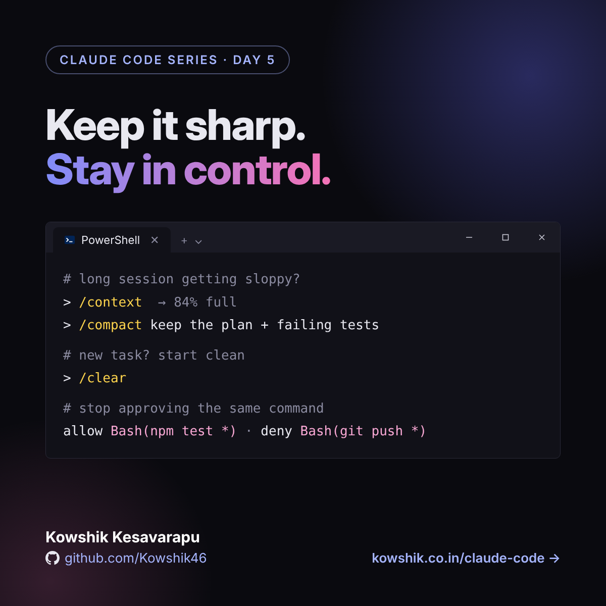
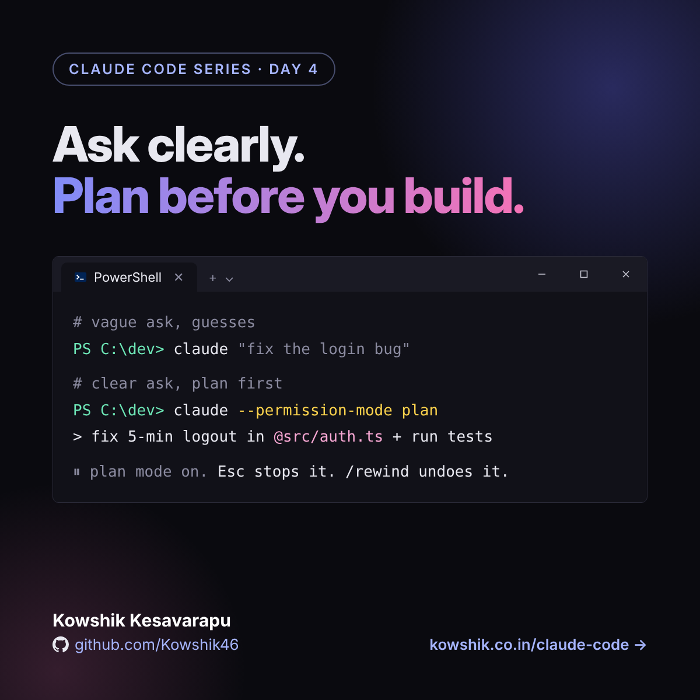
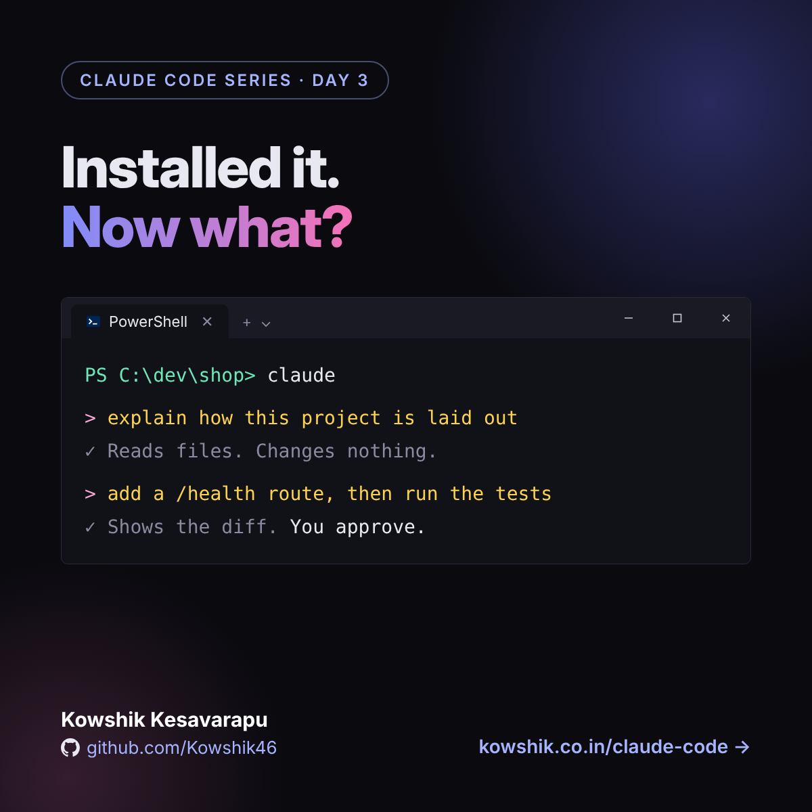
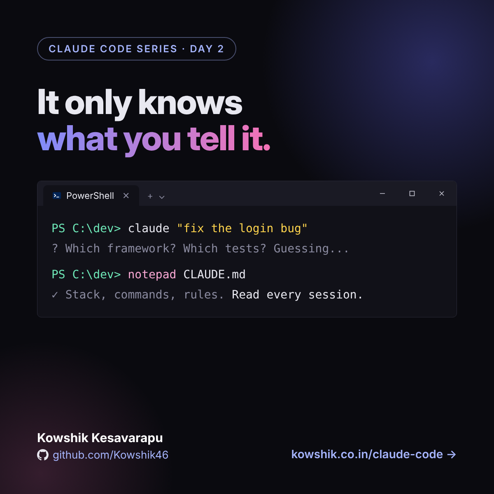
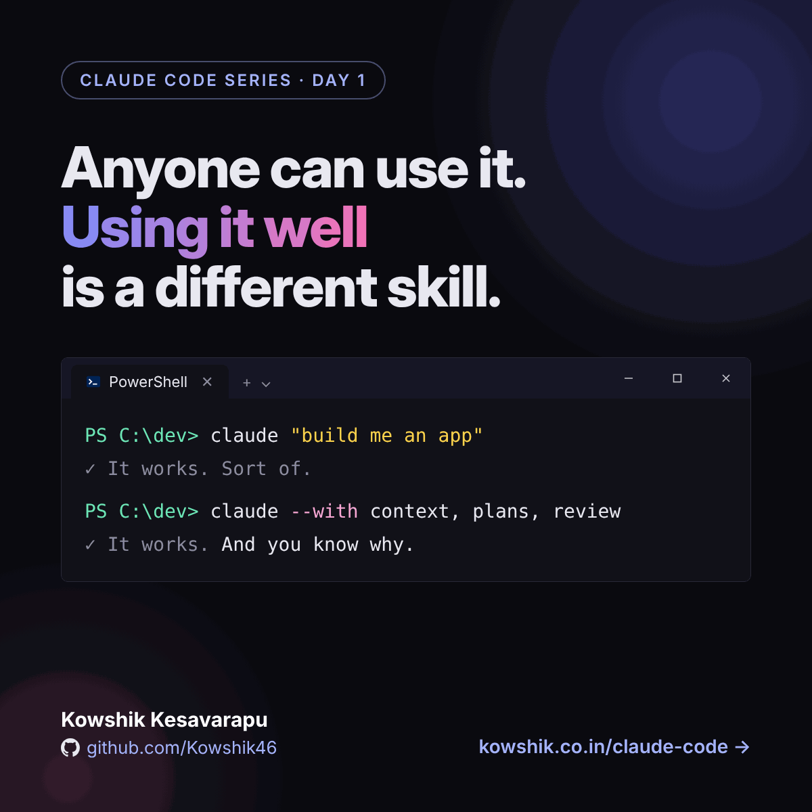

Articles

Teach it once. Reuse it forever.
Write and install skills and custom slash commands, with a real working example: what they are, why they help and how to build them, in the terminal and in VS Code.
Read Day 8
Plug it into your real tools.
Connect Claude Code to Sentry, GitHub and your database with MCP: transports, scopes and a shared .mcp.json, permissions for tools, tool search and output limits, and security habits, in the terminal and in VS Code.
Read Day 7
Let it commit. You review.
Use Claude Code with git: start from a clean branch, review changes, write commits, open pull requests with gh, run code reviews and work in parallel with worktrees, in the terminal and in VS Code.
Read Day 6
Keep it sharp. Stay in control.
What fills the context window and how to manage it with /context, /compact and /clear, plus permission modes and allow and deny rules, in the terminal and in VS Code.
Read Day 5
Ask clearly. Plan before you build.
Write prompts that work the first time, use plan mode and the explore, plan, build, verify loop, and learn the commands and shortcuts that keep you in control, in the terminal and in VS Code.
Read Day 4
Set it up once. Use it anywhere.
Install Claude Code in the terminal and in VS Code on Windows, Mac or Linux, with shortcuts, a safe first session, eight tips and fixes for the usual snags.
Read Day 3
Give Claude Code good context
It starts every session knowing nothing about your project. A short CLAUDE.md and clear asks stop the guessing, with a template you can copy.
Read Day 2
Anyone can use Claude Code. Using it well is different.
It works so well out of the box that it's easy to think you're already using it well. Four habits close the gap between "it works" and "I trust it", plus a simple loop to start with today.
Read Day 1What's coming
A new article lands here every day. The order may shift as we go.
Foundations
Using it well
Extending it
- Day 7MCP: connecting it to your tools and dataLive
- Day 8Skills and custom slash commands: reusable know-howLive
- NextSubagents: splitting up big workSoon
- NextHooks: automating the boring partsSoon
- NextPlugins: packaging it all upSoon
Follow along
I post a short version of each article on LinkedIn every day. The full write-up always lands here.